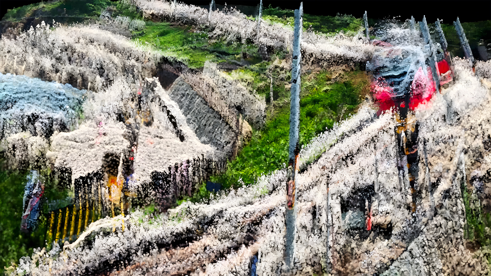
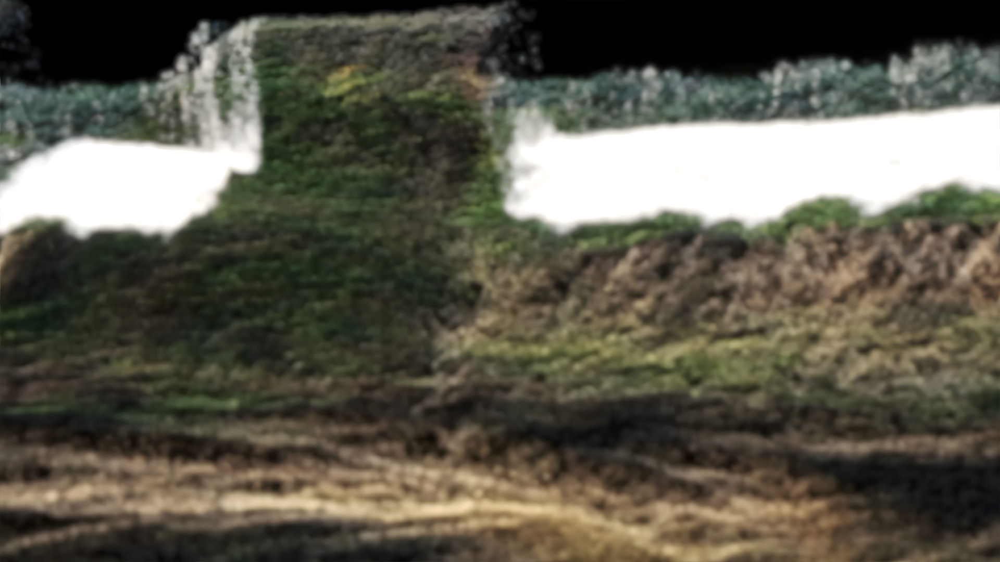
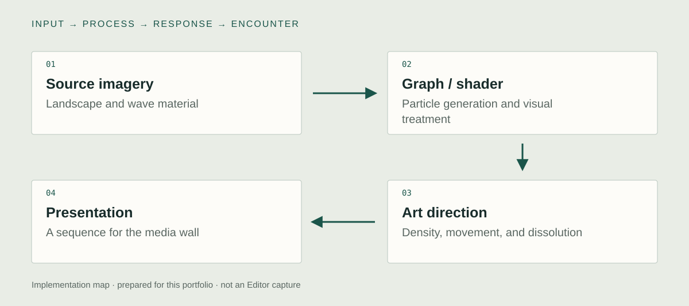

Unity implementation
VFX Graph particles
I developed the particle imagery with Unity VFX Graph. Landscapes disperse into moving fields and gather into recognizable forms. The graph is the production system for those transformations; its particles should be distinguished from Unity’s separate built-in Particle System component.

Shader treatment
I developed shader-based treatment alongside the VFX Graph work. Form, motion, and the remaining contour of the landscape determine how the source image can be recognized through the transformation. Graph operations and shader operations contribute different parts of the final image.
Moving-image series for a media wall
I used the Unity system to produce moving-image variations for the Art Korea Lab media wall. The series explores changes in density, movement, and dispersal. The documented presentation is an authored moving-image sequence; a specific video-sampling or projection-mapping setup still needs graph evidence.

System & design decisions

- 01Source imagery
Landscape and wave material
- 02Graph / shader
Particle generation and visual treatment
- 03Art direction
Density, movement, and dissolution
- 04Presentation
A sequence for the media wall
A graph as an image-making system
VFX Graph and shader work are the implementation focus. They organize the transition between an identifiable place and a particle field, rather than serving only as a final decorative layer.
Separate the tool from the exhibition format
The Unity system is the production environment. The documented media-wall work is a moving-image presentation. That distinction keeps the generative implementation visible without implying that the wall was a live audience-controlled installation.
Concept
How can a landscape retain the memory of an earlier state while its visible form keeps changing?
The work connects the repetition of waves with the appearance and disappearance of flowers. Its interest is in continuity through transformation: a new image carries traces of the image that preceded it. Particles provide a material vocabulary for gathering, drifting, and losing a contour.
Development
Retrospective planning notes, prepared for this portfolio.
Start from a visual relation
Place repetition, growth, and disappearance in the same visual language. Decide which details make a place recognizable.
Find the useful range
Prepare variations in density and movement. Judge where a contour becomes unstable and where the source disappears completely.
Compose a series
Use the range of states to build transitions and differences between scenes, then assess the sequence at the scale of the wall.
Further research
How does the persistence of a source contour affect recognition during particle-based transformation?
Vary: The degree and duration of contour preservation.
Hold consistent: The source sequence, viewing duration, and presentation scale.
Proposed comparison. No controlled study or measured effect is reported.